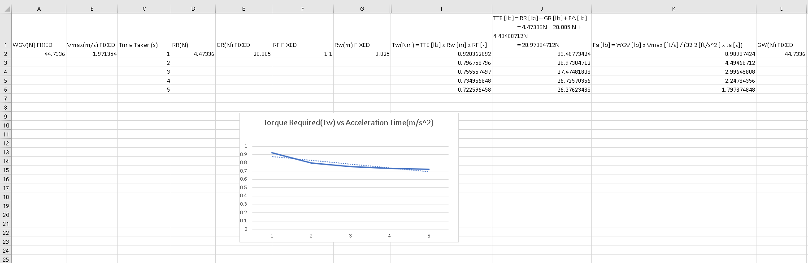
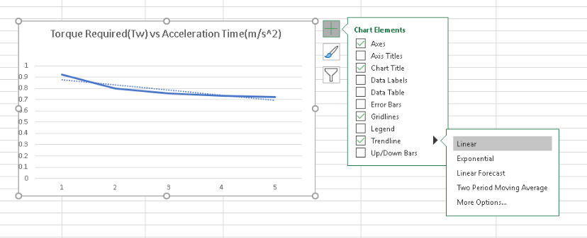
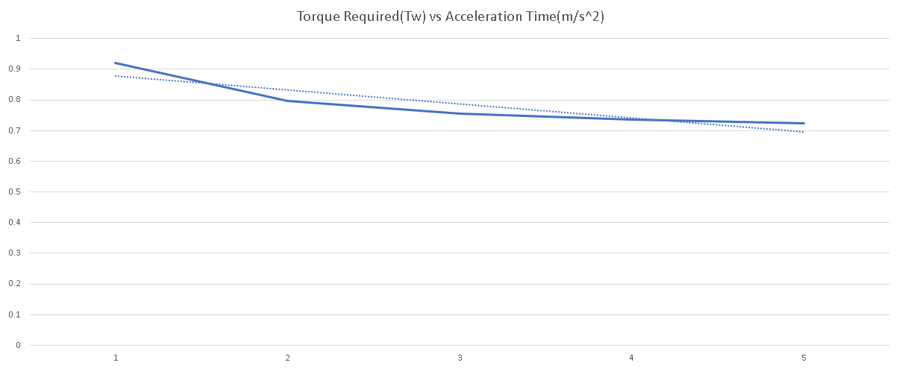

Mechanical Bible
“God once said ‘Let there be physics’, hence we humans came up with all sorts of calculations there is known, and here, be the great formulas and walkthroughs”
Formulas:
V(speed)(m/s) = r(radius) x rpm(revolutions per minute) x 0.10472(2pi/60)(constant)
Angular velocity(rad/s) = rpm x 0.10472(constant to convert rpm to rad/s)
Acceleration(aMax) = Vmax / s
Rolling Resistance(N) = Gross Weight of Vehicle(N) x Surface Friction Coeff
Grade Resistance(N) = Gross Weight of Vehicle(N) x incline angle(BCA)(degrees)
Acceleration Force(N) = Gross Weight of Vehicle(N) x Vmax(m/s) x time required to Vmax(s)
Total Tractive Effort(N) = Rolling Resistance(N) + Grade Resistance(N) + Acceleration Force(N)
Wheel Torque(Tw)(N) = Total Tractive Effort(N) x Radius of Wheel(0.025m) x Resistance Factor(1.1 to 1.15)
Maximum Tractive Torque(N) = Weight on drive wheel(N) x static friction coeff between wheel and ground x radius of wheel(N)
Constants:
Radius of track vehicle wheel = 0.025m
Constant to convert rpm to m/s = 0.10472
After familiarizing with the formulas, here are the steps to take to calculate all the mechanical aspects, all the way to Wheel Torque. I will use my own calculations to show you
**STEP 1: CALCULATING VMAX(MAXIMUM SPEED)**
Vmax = radius x revolutions per minute x 0.10472
= 0.025 x 753 x 0.10472
= 1.971354m/s
**STEP 2: CALCULATING ACCELERATION TIME USING VMAX AND TIME**
Acceleration(aMax) = Vmax / s
= 1.971354 / 2
= 0.985677 m/s^2
**STEP 3: CALCULATING WEIGHT OF GROCERIES AND TOTAL WEIGHT**
There are two steps, one to calculate with just the total weight of groceries and total weight of the vehicle with the load(total weight of groceries)
Weight of Groceries =
(3*200)g (Darlie Double Action Toothpaste)
+ (50*2)g (OSK Japanese Green Tea Bags)
+ (1000)g (Milo Powder Bag)
+ (360)g (Julie's Sandwich Biscuits)
+ (1500)g (Pasar Fresh Eggs)
= 3560g
= 3.56kg
Total Weight =
(1000)g + (3560)g
= 4560g
= 4.56kg
**STEP 4: CALCULATING WHEEL TORQUE(TW) VALUE**
There will be many steps involved in this, which is the calculation of Rolling Resistance, Grade Resistance, Acceleration Force, Total Tractive Effort and finally, Wheel Torque.
Rolling Resistance(Rr) [N] = Gross Weight of Vehicle(Gw)[N] x Surface Friction Coeff(SFc)
= 4.56kg * 9.81(convert to Force(N)) (44.7336N) * 0.01 (Good Concrete Contact Surface)
= 0.447336N
Using a BCA website found by Hans, I used the following to determine the θ for my calculation of grade resistance(Note that the θ is in degrees!)
tan(θ) = 1/2
θ = tan^-1(1/2)
θ = 26.565°
Grade Resistance(GR) [N] = Gross Weight of Vehicle(WGV) [N] x sin(θ)(degrees)
= 44.7336N * sin(26.565°)
= 20.005 N
Acceleration Force [N] = Gross Weight of Vehicle(WGV) [N] x Vmax [m/s] / (32.2 [m/s^2 ] x Time [s])
= (44.7336N * 1.971354m/s) / (9.81m/s^2 * 2s)
= 4.49468712N
Total Tractive Effort [N] = Rolling Resistance [N] + Grade Resistance [N] + Acceleration Force [N]
= 0.447336N + 20.005 N + 4.49468712N
= 24.49968712N
Lastly, Wheel Torque[Nm] = Total Tractive Effort [N] x Radius of Wheel[m] x Resistance Factor [-]
= 28.97304712N * 0.025m * 1.1
= 0.7967587958Nm
DISCLAIMER:
Important! Please ensure your motor gcm/mNm which is your maximum output torque is more than the wheel torque! This is to ensure that the output torque of your motor is sufficient to ensure that it can move with the gross weight applied.
**STEP 5: CALCULATING GRAPH OF TW VS ACCELERATION TIMES(1-5 SECONDS)**
Note, you will have to use excel, so you have sub in the values for the acceleration times and wheel torque.
As you can see below, I had to sub in my values so I could get the graph.

You should only highlight the Tw values and go to the Insert Tab
and find the Line or Area Chart Option. (Make sure only your Wheel Torque values are highlighted!)
Finally, to set up the best-fit line, select the + symbol when you click on your graph, go to Trendline and select Linear, as shown below.

Congratulations! You managed to complete the required steps for the assignment. The bonus question is still a work in progress.
Extra Notes: You can try to increase the amount of points, acceleration time, to better describe your graph. I personally just went until 5 points, which is 5 seconds, to show this.

For the Bonus Step, to calculate the maximum possible incline, you will have to find the maximum tractive torque, which is the vehicle’s maximum load it can take when in motion.
From there, treat the maximum tractive torque value as your torque wheel value and work backwards to get the maximum possible angle your vehicle can go.
Credits to Wen Da for recommending this method to me.
MTT = Ww [N] x μ [-] x Rw [m]
= 44.7336N/ 1(powered wheel) * 0.85 * 0.025
= 0.950589Nm
Treat Tw as value of MTT,
Tw = TTE * Rw * RF
0.950589 = TTE * 0.025 * 1.1
TTE = 34.5668727N
TTE [N] = RR [N] + GR [N] + FA [N] (All values are fixed from above, be sure to inverse sin!)
34.5668727N = 0.447336N + 44.7336N * sin(θ) + 4.49468712N
Maximum Possible Incline, θ = 41.5 °
And hence, the bonus step is complete! Hope you all had a great time going through this :)
DISCLAIMER:
My calculations are based on the formulas given in the sheet by Mr Tune on Blackboard including some basic physics formulas with a mix of mechanics.
Also, these calculation are mean for show, this is my first draft of calculation for the vehicle so the numbers do not accurately represent my final product.
Do note that some of your calculation may differ here and there, my recommended benchmark is to not exceed 45 degrees for maximum possible incline, as I personally feel it is not very logical from a physics point of view in terms of centre of gravity and traction required.
Finally, do not be stressed if your calculations are different, factors such as Gross Weight of Vehicle, Grade Resistance, etc, may differ as we have different values for them.